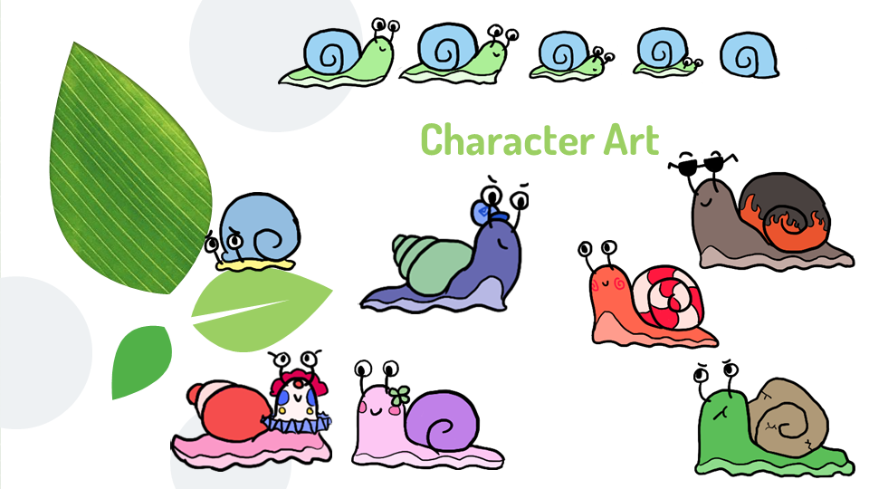
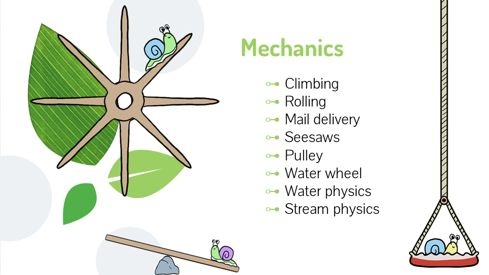

My recent game - Mail Snail
| Date | Location | Mailstone |
|---|---|---|
| Oct 07, 2020 | MSU | Mechanics Lock |
| Nov 07, 2020 | MSU | Alpha Test |
| Nov 30, 2020 | MSU | beta Test |
| Dec 18, 2020 | MSU | Release |
This is my recent game Mail Snail.This is my latest game mail snail. This is one of the five winning prototypes we selected last semester. This is a platform game, we hope players can relax through this game.
Game content
In Mail Snail, you are a customizable snail who is delivering snail mail to your fellow snails, making sure to deliver the right letters to the right snails. Along the way you will discover interactable secrets and find collectables which are proudly displayed inside your snail home. You travel across lands changing between your snail and shell forms, gliding along the terrain & sticking to certain surfaces. There are a few environmental stumbling blocks along the way but none that can hurt your little snail friend, as well as some simple machines to help you along your snail journey.
Character Art

Our characters are very cute, and I hope that through such characters, I can bring you a relaxed mood. Our music is also soothing music. Hope you all come to play our game with a happy mood.
Mechanics

Now we have climbing, rolling, mail delivery, seesaws, pulley, water wheel, water physics, and stream physics. In the future we will have more mechanisms.